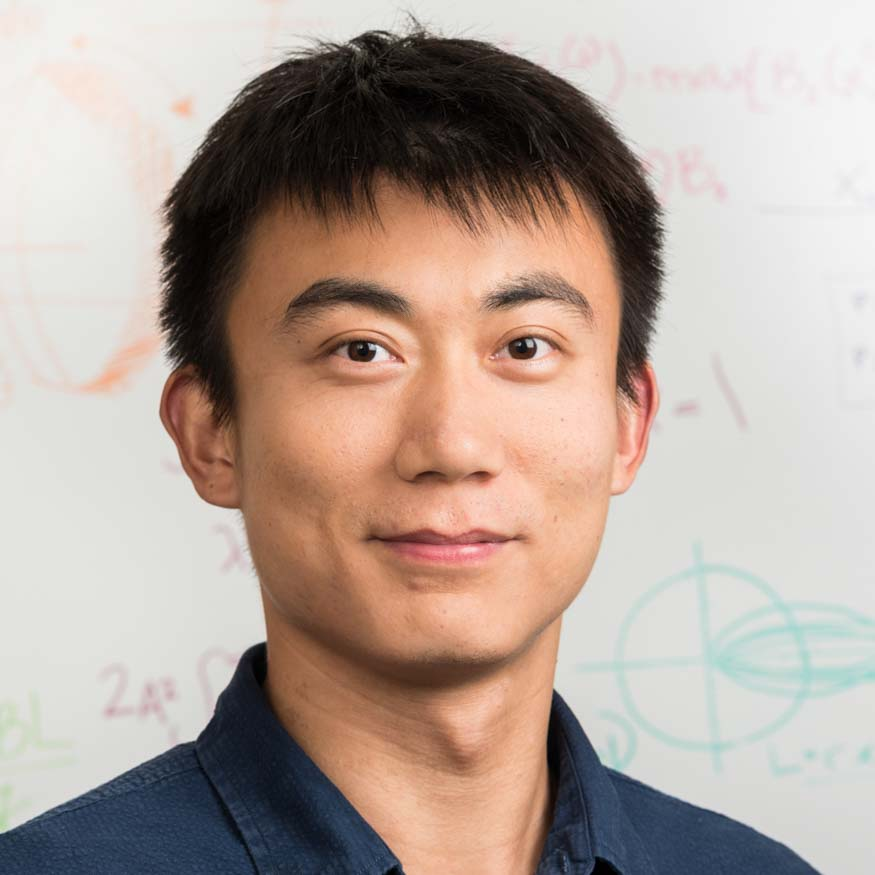

Wenzhao Lian

I am currently a senior research engineer at X, the moonshot factory (formerly Google[x]). I am interested in robotics and statistical machine learning.
Before joining X, I was a senior researcher and team lead at Vicarious, developing algorithms and systems for robotic manipluation tasks, which was deployed as the first product. In 2015, I received my Ph.D. in Electrical and Computer Engineering, advised by Dr. Lawrence Carin, and Master's degree in Statistics, advised by Dr. David Dunson. I received my Bachelor's Degree in Electrical and Computer Engineering in Shanghai Jiao Tong University in 2011. In the year of 2013 and 2010, I went to Department of Mathematics at Yale University and Department of Electrical and Computer Engineering at University of Virginia as a visiting student, respectively. My email is {$LastName$FirstName}@gmail.com.
Research Interests
I am interested in robotics and statistical machine learning, with a focus on the following topics.
Robotic manipulation problems (an old photo)
Time series, point processes
Statistical inference
Reinforcement learning
Publications
Wenzhao Lian, Ricardo Henao, Vinayak Rao, Joseph Locus, Lawrence Carin, A Multitask Point Process Predictive Model,( Appendix ) In Proceedings of the International Conference on Machine Learning, 2015
Wenzhao Lian, Piyush Rai, Esther Salazar, Lawrence Carin, Integrating Features and Similarities: Flexible Models for Heterogeneous Multiview Data, ( Appendix ) Proceedings of the Twenty-Ninth AAAI Conference on Artificial Intelligence, 2015
Evan X. Chen, Wenzhao Lian, Lawrence Carin, David Brady, Task-driven Adaptive Sensing on Quadrupole Mass Filter Systems for Classification, Computational Optical Sensing and Imaging, 2015
Kyle Ulrich, David Carlson, Wenzhao Lian, Jana Borg, Kafui Dzirasa, Lawrence Carin, Analysis of Brain States from Multi-Region LFP Time-Series, ( Appendix ) Advances in Neural Information Processing Systems, 2014
Esther Salazar, Yuliya Nikolova, Wenzhao Lian, Piyush Rai, Adrienne L. Romer, Ahmad R. Hariri, and Lawrence Carin, A Bayesian Framework for Multi-Modality Analysis of Mental Health, ( Appendix ) submitted
Piyush Rai, Wenzhao Lian, Lawrence Carin, Bayesian Multitask Distance Metric Learning, NIPS Workshop on Transfer and Multi-Task Learning: Theory meets Practice, 2014
Makoto Yamada, Wenzhao Lian, Amit Goyal, Jianhui Chen, Kishan Wimalawarne, Suleiman A Khan, Samuel Kaski, Hiroshi Mamitsuka, Yi Chang, Convex factorization machine for toxicogenomics prediction, Proceedings of the 23rd ACM SIGKDD International Conference on Knowledge Discovery and Data Mining
Wenzhao Lian, Piyush Rai, Esther Salazar, Lawrence Carin, Bayesian Multiview Factor Modeling for Integrating and Analyzing Heterogeneous Clinical Data, NIPS Workshop on Machine Learning for Clinical Data Analysis, Healthcare and Genomics, 2014
Wenzhao Lian, Vinayak Rao, Brian Eriksson, Lawrence Carin, Modeling Correlated Arrival Events with Latent Semi-Markov Processes, ( Appendix ) (Code) In Proceedings of the International Conference on Machine Learning, 2014
Wenzhao Lian, Ronen Talmen, Hitten Zaveri, Lawrence Carin, Ronald Coifman, Multivariate Time-Series Analysis and Diffusion Maps, Signal Processing, 2015, vol. 116, pp. 13-28
David E. Carlson, Joshua T. Vogelstein, Qisong Wu, Wenzhao Lian, Mingyuan Zhou, Colin R. Stoetzner, Daryl Kipke, Douglas Weber, David B. Dunson and Lawrence Carin, Sorting Electrophysiological Data via Dictionary Learning & Mixture Modeling, IEEE Transactions on Biomedical Engineering. July, 2013
Working Experience
Senior Research Engineer at Google X, Mountain View, CA, Aug. 2019 to Present
Senior Researcher at Vicarious, San Francisco, CA, Jan. 2016 to Aug. 2019
Research intern at Yahoo Labs, Sunnyvale, CA, Jun. to Sept. 2015
Research intern at Microsoft Research, Redmond, WA, May to Aug. 2014
Research intern at Technicolor Research Center, Palo Alto, CA, Jun. to Aug. 2013
Teaching Experience
Teaching assistant for STA571, Advanced Machine Learning, Spring 2015
Teaching assistant for STA561/CS571, Probabilistic Machine Learning, Fall 2013